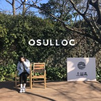

제주 오설록 티 뮤지엄

- 자연을 생각하는 제주 오설록 티 뮤지엄! 제주 서광 차밭과 맞닿아 있는 오설록 티 뮤지엄은 아모레퍼시픽이 차와 한국 전통차 문화를 소개하고, 보급하고자 2001년 9월에 개관한 국내 최초의 차 박물관입니다. 그 안에서 즐기는 오설록 녹차 아이스크림을 맛 보러 오세요. 세계적인 디자인 건축 전문사이트인 디자인붐이 선정한 세계 10대 미술관에 오를만큼 안팎으로 아름다운 풍광을 뽐내는 티뮤지엄은 연간 150만 명의 관람객이 방문하는 제주 최고 명소이자 문화 공간입니다.
- 주소 : 제주 서귀포시 안덕면 신화역사로 15 오설록
- 영업시간 : 매일 09:00 - 19:00
- 대표 메뉴
- 녹차 아이스크림 5,000원
- 녹차 롤 케이크(piece) 5,800원
- 제주화산암차 7,300원
- 삼다연 7,300원
- 삼다연 제주 영귤 7,300원
- 감귤 로즈 아이스티 6,800원
- 자몽 그린 아이스티 6,800원
- 위미 올레 감귤 에이드 6,500원
- 애월 바다 레몬 에이드 6,500원